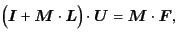

In a straightforward implementation of this lubrication correction, even in F version, the mobility problem needs twice matrix-inversions.
Here's some trick to prevent the extra matrix-inversion,
which is usually the bottleneck of the calculation
(especially for large systems).
Substituting the resistance matrix (3.32)
into the resistance equation and multiplying  from the left,
we have the inverse-free matrix equation
from the left,
we have the inverse-free matrix equation
|  | (3.33) |